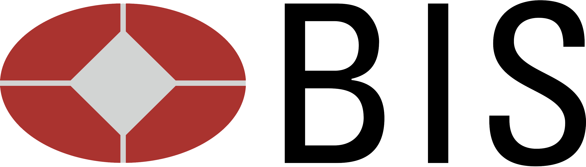
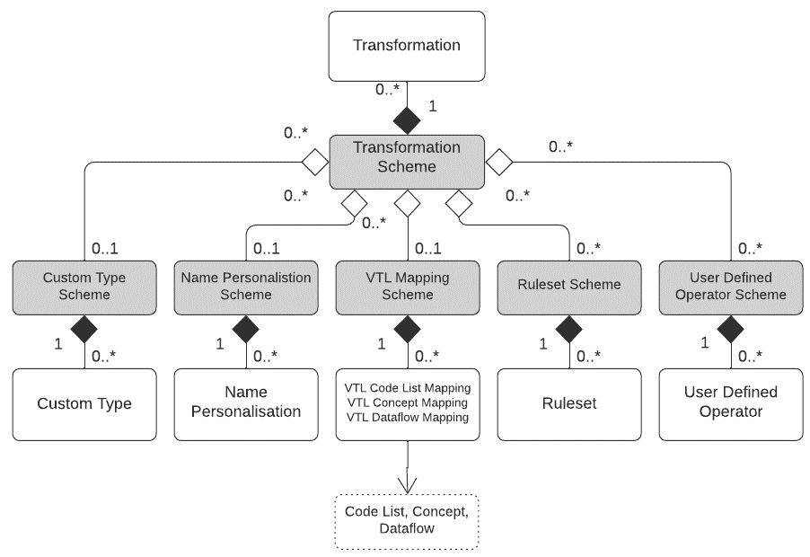
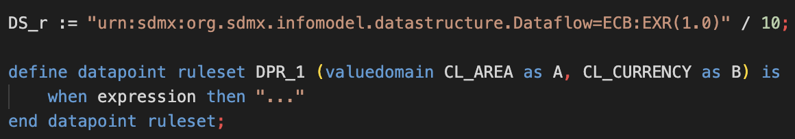
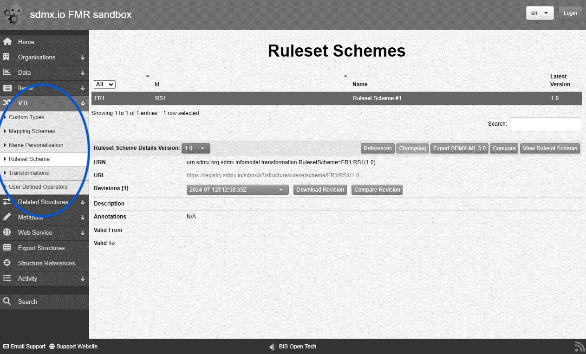
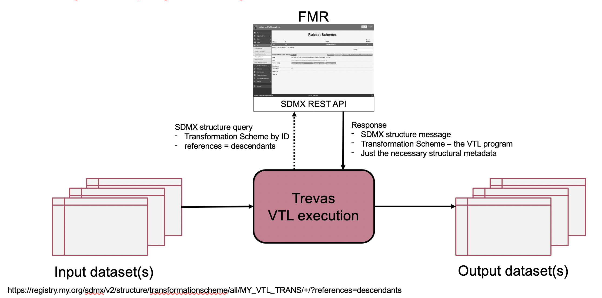
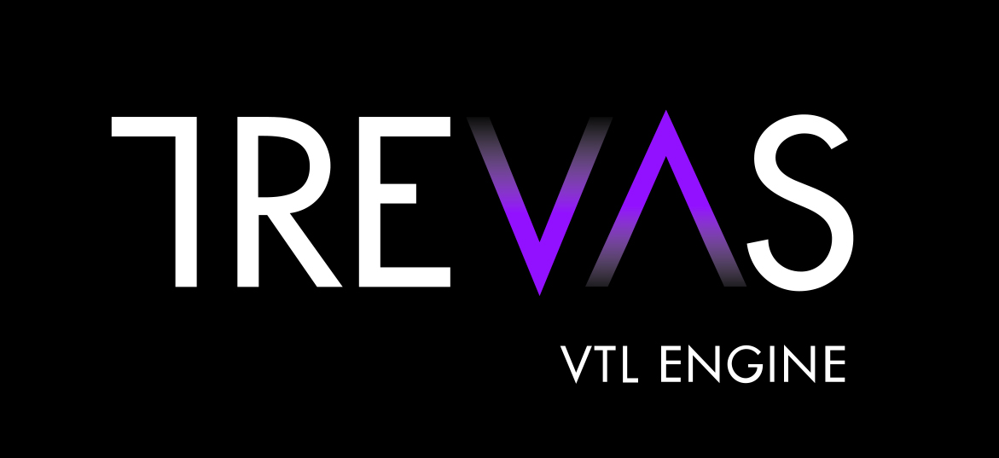
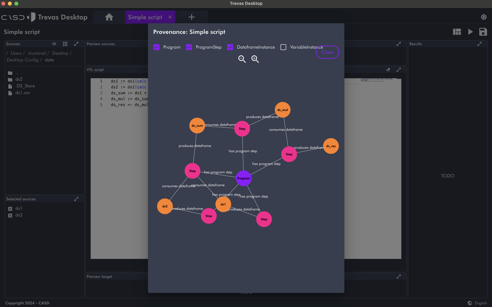

A practical SDMX /VTL implementation using Trevas and FMR
Glenn Tice, BIS Monetary and Economics IT / Nicolas Laval, Making
Sense
2024 SDMX Experts Workshop


VTL integration with SDMX
- VTL has its own information model based on GSIM, but is designed to be compatible with SDMX and other standards like DDI
- The SDMX Section 6 Technical Notes explains how VTL and SDMX work together
- Two important elements for a practical implementation are:
- How VTL programs can be stored and exchanged together with the SDMX structures of the datasets involved
- How SDMX artefacts can be referenced in VTL code as inputs and / or outputs of Transformations and for validation Rules
Storage and exchange of VTL
- In the SDMX context, VTL code is managed as structural metadata
- The SDMX information model provides several artefacts for this purpose
- Centres on the Transformation Scheme artefact which encapsulates a VTL program
- Allows VTL to be stored and exchanged in the same way as other SDMX structures

Referencing SDMX artefacts in VTL Statements and Rules
-
SDMX artefacts can be referenced in VTL code using full or partial URNs
-
Or, by user defined aliases defined using VTL Mapping Schemes which allow SDMX artefacts to be given symbolic names
FMR support for storage and exchange of VTL

- All VTL structures supported in FMR 11
- VTL syntax checking on structure submission
- Basic authoring and maintenance using the FMR web user interface
- Better VTL code development environments can interface to the FMR repo by the REST API
FMR support for referencing SDMX artefacts in VTL code
Deep structure cross referencing
- FMR identifies SDMX artefacts referenced by full or partial URN in the VTL code
- Manages them as structural metadata cross references
Why?
- Execution engines can efficiently retrieve both the VTL program and structural metadata for input datasets and validation rules in a single REST web service call for the Transformation Scheme with references=descendants
- Enforces metadata referential integrity
FMR support for referencing SDMX artefacts in VTL code - Example
- A Transformation Scheme is constructed with a single Transformation
On submission of the Transformation Scheme to the metadata
registry, FMR will:
- Syntactically analyse the VTL code
- Identify ECB:EXR(1.0) as an SDMX partial URN
- Infer that it is a Dataflow from the code context
- Verify that the Dataflow exists in the registry
- Create a cross reference to the Dataflow from the Transformation Scheme
- Store the Transformation Scheme
Executing a VTL program using Trevas and FMR



- Java VTL engine
- Distributed computing (Apache Spark)
- Open source
- Modular
Trevas open source galaxy
- Trevas ecosystem
- Trevas TS
- VTL editor


VTL 2.1
Tools updated with VTL 2.1 grammar:
- Vtl Editor
- Trevas
- Trevas TS
- Trevas Jupyter
Support:
- ✅ random
- ✅ case
- ❌ Time operators
Building solutions with Trevas
Example:
- Desktop app
- Validating data using DDI

CASD
- Secure Data Access Center
Insee VTL/SDMX use case
- (1) validation of municipality code in input file
- (2) clean BPE input database
- (3) BPE aggregation by municipality, type and year
- (4) BPE aggregation by NUTS 3, type and year
- (5) BPE validation of facility types by NUTS 3
- (6) prepare 2021 census dataset by NUTS 3
- (7) extract dataset on general practitioners from BPE by NUTS 3 in 2021
- (8) merge practitioners & legal population datasets by NUTS 3 in 2021 and compute an indicator
Use case in action
Next steps
Open collaboration,
beneficial for all
- BIS: lessons learned from PoC & tune the VTL metadata functionality if needed
- Making Sense: improve Trevas SDMX support
- UNSD: PoC VTL integration